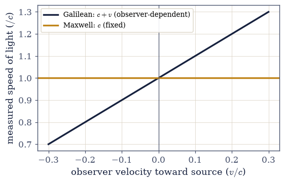
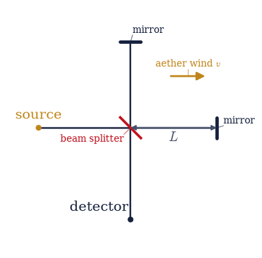
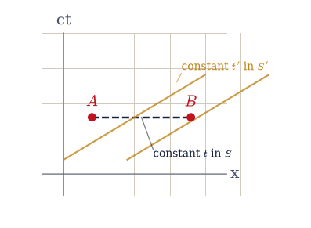
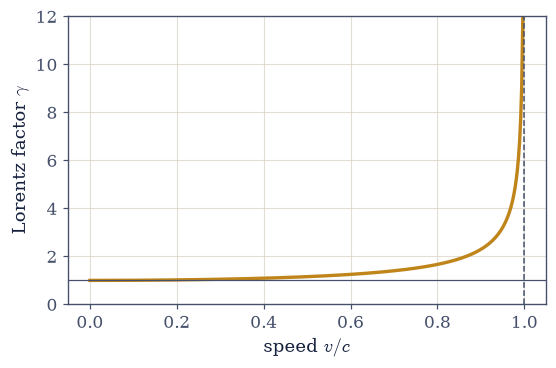

4.1 The Crisis and the Postulates#
Notebook overview#
This notebook opens Volume IV by following a contradiction to its conclusion. By the end of the nineteenth century two pillars of physics stood firm and, it turned out, incompatible. The first was Galilean relativity: velocities add, \(v_{\rm total}= v_1+v_2\), and time is universal, the same for everyone. The second was Maxwell’s electromagnetism, whose wave equation picks out a single speed \(c=1/\sqrt{\mu_0 \varepsilon_0}\) with no observer attached. Put them together and they disagree: an observer moving toward a light beam should, by Galileo, measure \(c+v\), yet Maxwell insists the answer is \(c\) for everyone. One of the two had to give.
We build the story as it actually unfolded, and we let the computer make each step concrete. We quantify the incompatibility, work through the Michelson–Morley experiment that was built to find the aether and found nothing, and then take Einstein’s two postulates and watch what they cost. The price is steep and specific: absolute time is gone. Two events that happen at once for one observer do not happen at once for another. From that single break flow the time dilation and length contraction this volume derives in full from §4.2 onward; here we meet them as previews, established and measured but not yet derived.
A note on the relationship to Volume III. Those who read it met this same crisis at the end of §3.8 (“a speed \(c\) relative to what?”) and saw the answer used in the capstone §3.12, which rewrote electrodynamics in relativistic language by taking the Lorentz transformation as given. Here the logic runs the other way: we earn that machinery from physical principles. The notebook assumes no prior relativity and stands on its own, so a first-time reader needs nothing from Volume III, while a returning reader will recognise the question §3.8 left open.
Everything is in SI units, with \(c=1/\sqrt{\mu_0\varepsilon_0}=2.998\times10^8\,\)m/s. This notebook is conceptual and historical, so its figures are clean stills: the interferometer, the colliding predictions, the spacetime sketch of simultaneity. There is nothing here that genuine motion would clarify, so nothing is animated.
How to read the checks. Each exercise ends with a
validatecall against an independent fact: Maxwell’s \(c\) equal to \(1/\sqrt{\mu_0\varepsilon_0}\), the predicted fringe shift the aether model demands, the Lorentz transformation keeping light at \(c\), the nonzero time-offset of “simultaneous” events. A ✓ is strong evidence; a ✗ is a prompt to locate the discrepancy, not a verdict.Scope. A first, self-contained development of the crisis and the postulates; the Lorentz transformation is derived in §4.2 and the consequences in §4.3–§4.4. See Einstein’s 1905 paper []; Nolting, Theoretical Physics 4 [Nol17]; Taylor & Wheeler, Spacetime Physics [TW92]; and §3.8 (where \(c\) first appeared) and §3.12 (the covariant formulation that used this machinery).
Theory in brief#
The Galilean picture#
In Newtonian relativity, velocities add and time is absolute,
A ball thrown at \(u\) on a train moving at \(v\) travels at \(u+v\) over the ground. For centuries nothing contradicted this.
Maxwell’s inconvenient constant#
The wave equation of §3.8 fixes the speed of light at
a definite number built from the electric and magnetic constants alone, with no observer in it. Under Galilean addition an observer approaching a beam at \(v\) should measure \(c+v\). The crisis: Maxwell says \(c\) is fixed; Galileo says it cannot be.
The aether and Michelson–Morley#
The nineteenth-century rescue was a medium, the luminiferous aether, in which \(c\) is the speed and relative to which the Earth moves. The motion should produce an “aether wind”, and an interferometer comparing light along and across the wind should show a fringe shift on rotation,
In 1887 Michelson and Morley built an instrument sensitive well below the predicted shift, and saw nothing: the null result that refuted the aether.
Einstein’s postulates#
Einstein resolved the crisis by elevating its two horns to principles,
Keep \(c\) invariant, and absolute time must go.
The immediate casualty: simultaneity#
If light has the same speed for all observers, two events at the same time in one frame are not at the same time in another,
the relativity of simultaneity, with \(\gamma=1/\sqrt{1-v^2/c^2}\).
What must replace Galileo#
The transformation that keeps \(c\) invariant in every frame is the Lorentz transformation,
derived from the postulates in §4.2. Its factor \(\gamma\) governs time dilation and length contraction, previewed below and developed fully in §4.2–§4.4.
Setup#
import numpy as np
import matplotlib.pyplot as plt
from ecp import draw, validate
from scipy.constants import mu_0 as MU0 # vacuum permeability, T·m/A
from scipy.constants import epsilon_0 as EPS0 # vacuum permittivity, F/m
C_LIGHT = 1.0 / np.sqrt(MU0 * EPS0) # speed of light, m/s
ACCENT, INK, SOFT = draw.ACCENT, draw.INK, draw.SOFT
def gamma(v):
"""The Lorentz factor γ(v) = 1/sqrt(1 − v^2/c^2) (eq-toward-lorentz).
The single number behind every relativistic effect: it is 1 at rest, grows
slowly at everyday speeds, and diverges as v → c, which is why c is a
speed limit. Time dilation scales as γ and length contraction as 1/γ.
Parameters
----------
v : float or numpy.ndarray
Speed, in m/s (|v| < c).
Returns
-------
float or numpy.ndarray
The Lorentz factor, matching the shape of ``v``.
"""
return 1.0 / np.sqrt(1.0 - (v / C_LIGHT) ** 2)
def lorentz_transform(t, x, v):
"""Lorentz transformation of a 1-D spacetime event to a frame moving at v (eq-toward-lorentz).
t' = γ(t − vx/c^2), x' = γ(x − vt): the map (asserted here, derived in
§4.2) that keeps the speed of light c the same in the new frame, mixing
time and space.
Parameters
----------
t : float or numpy.ndarray
Time coordinate(s) in the original frame, in seconds.
x : float or numpy.ndarray
Position coordinate(s) in the original frame, in metres.
v : float
Boost speed, in m/s.
Returns
-------
t_prime, x_prime : float or numpy.ndarray
The event coordinates in the moving frame.
"""
g = gamma(v)
return g * (t - v * x / C_LIGHT**2), g * (x - v * t)
def galilean_transform(t, x, v):
"""Galilean transformation of a 1-D event to a frame moving at v (eq-galilean).
t' = t, x' = x − vt: the classical map with absolute time, the one that
fails to keep c invariant.
Parameters
----------
t : float or numpy.ndarray
Time coordinate(s), in seconds.
x : float or numpy.ndarray
Position coordinate(s), in metres.
v : float
Boost speed, in m/s.
Returns
-------
t_prime, x_prime : float or numpy.ndarray
The event coordinates in the moving frame (time unchanged).
"""
return t, x - v * t
Exercise 1 — The incompatibility, quantified#
Begin by making the conflict numerical. Maxwell’s law Eq. 239 fixes the speed of light at \(c=1/\sqrt{\mu_0\varepsilon_0}\), the same for everyone. Galilean velocity addition Eq. 238 says an observer moving at \(v\) toward a source should measure \(c+v\), and one moving away \(c-v\). For even a modest \(v=0.1c\) these differ from \(c\) by a tenth, far too much to dismiss (Fig. 278).
This exercise (worked). Evaluate Maxwell’s \(c\) as the closed-form expression
1/np.sqrt(MU0*EPS0) and the Galilean predictions \(c\pm v\) as plain numpy scalar
arithmetic for an observer at \(v=0.1c\), and confirm Maxwell’s value is observer-free
while the Galilean ones straddle it by \(\pm v\). One of the two pillars of
nineteenth-century physics must give.
Maxwell's c = 1/√(μ₀ε₀) = 2.9979e+08 m/s (no observer in it)
Galilean, approaching: c + v = 3.2977e+08 m/s
Galilean, receding: c − v = 2.6981e+08 m/s
they disagree with Maxwell by ±v = ±2.998e+07 m/s
Validation 1#
✓ Maxwell's c is fixed, independent of any observer [got 2.99792e+08 vs expected 2.99792e+08 (rtol=1e-06)]
✓ the Galilean predictions straddle c by ±v (the incompatibility) [max|Δ| = 1.49012e-08 (rtol=1e-09, atol=1e-09)]
True

Fig. 278 The collision between the two pictures. Galilean velocity addition (dark) makes the measured speed of light depend on the observer’s motion, \(c+v\) moving toward the source and \(c-v\) moving away, a sloped line through the origin. Maxwell’s electromagnetism (amber) fixes the speed at \(c=1/\sqrt{\mu_0\varepsilon_0}\) for every observer, a flat line. Both cannot be right: at \(v=0.1c\) they already differ by a tenth of \(c\).#
Exercise 2 — Michelson–Morley: the expected signal#
The aether hypothesis was a serious attempt to save Galileo: light has speed \(c\) in a medium, the aether, and the Earth’s motion through it is an “aether wind.” Michelson and Morley built an interferometer to detect it, splitting a beam down two perpendicular arms and recombining them (Fig. 279). Light travelling along the wind and across it takes slightly different times, so rotating the apparatus by \(90°\) should slide the interference fringes by \(\Delta=(2L/\lambda)(v/c)^2\) Eq. 240.
This exercise (worked). For the experiment’s parameters — arm length \(L=11\,\)m, Earth’s orbital speed \(v=3\times10^4\,\)m/s, wavelength \(\lambda=590\,\)nm:
Derive the shift from the aether kinematics itself: compute the exact round-trip times along the wind, \(T_\parallel=(2L/c)/(1-\beta^2)\), and across it, \(T_\perp=(2L/c)/\sqrt{1-\beta^2}\); rotating by \(90°\) swaps the arms, so the fringes shift by \(\Delta=c\cdot2(T_\parallel-T_\perp)/\lambda\).
Confirm it agrees with the leading-order formula \(2L(v/c)^2/\lambda\) and is about \(0.37\) of a fringe, some forty times the experiment’s resolution.

Fig. 279 The Michelson–Morley interferometer. Light from the source (left) hits a beam splitter (centre) that sends half down each perpendicular arm of length \(L\) to a mirror and back; the returning beams recombine at the detector (bottom) and interfere. If the Earth drifts through an aether at speed \(v\) (the assumed wind, amber), light along the wind and across it take different round-trip times, so a \(90°\) rotation should shift the fringes. It did not.#
arm length L = 11.0 m, Earth speed v = 3e+04 m/s, λ = 590 nm
Δ from the round-trip times = 0.37340 fringes
Δ = 2L(v/c)²/λ (leading order) = 0.37340 fringes
the apparatus could resolve ~0.01 fringes, so 0.37 was unmissable
Validation 2#
✓ the exact aether round-trip times reproduce the 2L(v/c)²/λ fringe shift [got 0.373398 vs expected 0.373398 (rtol=1e-06)]
✓ the predicted shift (~0.37 fringe) is far above the experiment's ~0.01 resolution [Δ = 0.373 fringes]
True
Exercise 3 — The null result and its meaning#
Michelson and Morley rotated the interferometer and watched the fringes. They did not move, to a precision of about \(0.01\) of a fringe, some forty times below the predicted \(0.37\). The aether model demands a shift proportional to \((v/c)^2\), so the only way to fit a null is \(v\approx0\), the Earth at rest in the aether. But the Earth orbits the Sun at \(3\times10^4\,\)m/s and the Sun moves through the galaxy, so \(v=0\) in all seasons is untenable.
This exercise (worked). Confirm the contradiction by inverting Eq. 240:
solve for the aether-wind speed \(v=c\sqrt{\lambda\Delta_{\rm obs}/2L}\) that the observed
upper bound \(\Delta_{\rm obs}=0.01\) would allow (a plain numpy square-root), and show
it is far below the Earth’s known orbital speed. The escapes are only two: the aether is
perfectly dragged along by the Earth (refuted by stellar aberration and other
experiments), or \(c\) is genuinely the same in every frame.
observed shift ≲ 0.01 fringe vs predicted 0.373 fringe
max aether speed consistent with the null: v ≲ 4909 m/s
but the Earth's orbital speed is 3e+04 m/s — the null is incompatible with the aether: True
Validation 3#
✓ the null result refutes the aether and points to an invariant c
True
Exercise 4 — The postulates and the invariance of c#
Einstein’s move was to stop trying to save Galileo and take the experiment at its word. His two postulates Eq. 241 are: the laws of physics are identical in every inertial frame, and the speed of light is the same \(c\) for every inertial observer, whatever the motion of source or observer. Keeping \(c\) invariant forces a new transformation between frames, the Lorentz transformation Eq. 243 (derived in §4.2), in place of the Galilean one.
This exercise (worked). Take a light ray, the events along \(x=ct\), and transform
them to a frame at \(v=0.6c\) two ways: with the Lorentz transformation
(the lorentz_transform helper) and with the Galilean one (galilean_transform).
Confirm that under Lorentz the ray still satisfies \(x'=ct'\) (the speed of light is
preserved), while under Galileo it does not.
Lorentz frame: x'/t' = 2.997925e+08 m/s (c = 2.997925e+08)
Galilean frame: x'/t' = 1.199170e+08 m/s (= c − v = 1.199170e+08)
Validation 4#
✓ the Lorentz transformation keeps light at speed c in every frame [max|Δ| = 1.19209e-07 (rtol=1e-06, atol=1e-09)]
✓ the Galilean transformation fails to keep light at c (it gives c − v)
True
Exercise 5 — The relativity of simultaneity#
This is the conceptual heart, and the deepest break. If \(c\) is the same for everyone, then “at the same time” cannot be. Consider two events at the same instant in frame \(S\), a distance \(\Delta x\) apart. In a frame moving at \(v\) the Lorentz transformation gives them a time separation \(\Delta t'=-\gamma v\Delta x/c^2\) Eq. 242, which is not zero: what is simultaneous for one observer is staggered for another (Fig. 280). This is the train-and-embankment thought experiment, where a flash judged to reach both ends of a train car at once on the platform reaches them at different times for a rider, made quantitative.
This exercise (worked). Take two events simultaneous in \(S\) (\(\Delta t=0\)) and
\(\Delta x=100\,\)m apart, and compute their time separation in a frame moving at
\(v=0.6c\) from the Lorentz transformation (the lorentz_transform helper applied to
both events, differenced). Confirm it equals \(-\gamma v\Delta x/c^2\) and is nonzero.
Absolute, universal time, the bedrock of Newton, is gone.

Fig. 280 The relativity of simultaneity on a spacetime diagram (\(x\) horizontal, \(ct\) vertical). Two events \(A\) and \(B\) lie on a line of constant time in frame \(S\) (dark dashed, horizontal): simultaneous there. A frame moving at \(v\) has tilted lines of constant time (amber, slope \(v/c\)); \(A\) and \(B\) do not lie on one, so in \(S'\) they happen at different times. Simultaneity is not absolute, it depends on the observer’s motion.#
events simultaneous in S (Δt = 0, Δx = 100 m)
in S' (v = 0.6c): Δt' = -2.502e-07 s vs −γvΔx/c² = -2.502e-07 s
nonzero: the two events are NOT simultaneous in the moving frame
Validation 5#
✓ events simultaneous in one frame are not simultaneous in another [got -2.50173e-07 vs expected -2.50173e-07 (rtol=1e-06)]
True
Exercise 6 — Time dilation, previewed#
Every relativistic effect is governed by one number, the Lorentz factor \(\gamma(v)=1/\sqrt{1-v^2/c^2}\) Eq. 243. It is essentially \(1\) at everyday speeds, which is why relativity hid for so long, but it climbs steeply as \(v\) approaches \(c\) and diverges there (Fig. 281). A moving clock runs slow by exactly this factor: a second on a passing clock takes \(\gamma\) seconds of our time.
This exercise (student). With \(\gamma(v)\) defined as the numpy function
gamma, tabulate \(\gamma\) and the clock-slowing factor \(1/\gamma\) at \(v=0.6c\), \(0.9c\),
and \(0.99c\), and confirm \(\gamma(0.6c)=1.25\) and that \(\gamma\) grows without bound as
\(v\to c\). The full derivation of time dilation is §4.2; here we establish the factor and
its behaviour.
v/c γ 1/γ (clock slowing)
0.60 1.2500 0.8000
0.90 2.2942 0.4359
0.99 7.0888 0.1411
γ(0.999c) = 22.37 → γ diverges as v → c
Validation 6#
✓ γ(0.6c) = 1.25 [got 1.25 vs expected 1.25 (rtol=1e-06)]
✓ γ is 1 at rest and diverges as v → c (the speed limit)
True

Fig. 281 The Lorentz factor \(\gamma(v)=1/\sqrt{1-v^2/c^2}\) against speed. It sits imperceptibly above \(1\) for everyday speeds (the flat left), which is why classical physics worked so well, then rises steeply and diverges as \(v\to c\) (dashed). This single curve sets the size of every relativistic effect: time dilation by \(\gamma\), length contraction by \(1/\gamma\).#
Exercise 7 — Length contraction, previewed#
The same factor works on space. An object of rest length \(L_0\) measured moving along its length is found shorter, \(L=L_0/\gamma\) Eq. 243. Time dilation and length contraction are not two phenomena but two faces of the one Lorentz factor, and §4.2 derives them together from the transformation.
This exercise (student). For a rest length \(L_0=1\,\)m at \(v=0.6c\), \(0.9c\), \(0.99c\):
Measure the contraction through the transformation rather than quoting it: a length measurement locates both rod ends at the same time in the observer’s frame. For each end, pick the event on its worldline that is simultaneous (t = 0) in \(S\) — for the far end that is \(t'=-vL_0/c^2\) in the rod frame — and inverse-boost it back with the
lorentz_transformhelper (boost speed \(-v\)). The spatial separation of the two mapped events is the measured length.Confirm it equals \(L_0/\gamma\), the reciprocal of Exercise 6’s time dilation: where clocks slow by \(\gamma\), lengths shrink by \(1/\gamma\).
v/c measured length (m) L₀/γ (m)
0.60 0.8000 0.8000
0.90 0.4359 0.4359
0.99 0.1411 0.1411
Validation 7#
✓ the length measured through the Lorentz transformation contracts by exactly 1/γ [max|Δ| = 7.77156e-16 (rtol=1e-09, atol=1e-09)]
True
Exercise 8 — What we keep and what we give up#
Stand back and take stock of the trade. Einstein’s two postulates keep the most cherished idea of classical physics, the principle of relativity, that the laws are the same in every inertial frame, and now extend it to include electromagnetism so that Maxwell’s \(c\) is truly universal. What they give up is just as fundamental: absolute time, and with it absolute simultaneity. There is no master clock, no shared “now”; each inertial observer carries their own time, and the Lorentz transformation is the exchange rate between them. From these two sentences of postulate, the entire edifice of Volume IV follows.
The road ahead derives what we have here only previewed. §4.2 derives the Lorentz transformation from the postulates; §4.3 builds spacetime, its invariant interval, and Minkowski diagrams; §4.4 resolves the famous paradoxes (the twins, the pole and barn) by direct computation; §4.5–§4.7 develop relativistic dynamics, four-momentum, and \(E=mc^2\), returning at the end to the field tensor of §3.12 that this machinery was built to support; and §4.8 offers a first taste of curved spacetime. The capstone of Volume III used exactly what we are now about to build.
This exercise. Make the synthesis concrete: confirm in one check that the Lorentz
factor satisfies \(\gamma\ge1\) for every speed (with a numpy array comparison over a
sweep), so that moving clocks never run fast and moving lengths never stretch, the
universal direction of every effect that follows from the postulates.
γ ≥ 1 for every speed in the sweep: True
kept: the relativity principle (now including E&M) and the constancy of c
given up: absolute time and absolute simultaneity
the rest of Volume IV unfolds from these two postulates
Validation 8#
✓ γ ≥ 1 always: moving clocks slow and moving lengths contract, never the reverse
True
Notebook summary#
The crisis Eq. 238, Eq. 239: Maxwell’s \(c=1/\sqrt{\mu_0 \varepsilon_0}\) is observer-free, but Galilean addition makes an approaching observer measure \(c+v\); at \(v=0.1c\) the two predictions (\(3.30\times10^8\) vs \(2.70\times10^8\)) straddle the fixed \(2.998\times10^8\,\)m/s.
Michelson–Morley Eq. 240: the aether model predicts a \(\Delta=2L(v/c)^2 /\lambda\approx0.37\)-fringe shift, and the experiment, sensitive to \(\sim0.01\), saw nothing; no plausible aether-wind speed fits the null, which refutes the aether and points to an invariant \(c\).
The postulates Eq. 241: the relativity principle (extended to E&M) and the constancy of \(c\). The Lorentz transformation Eq. 243 keeps a light ray at \(x'=ct'\) where the Galilean one gives \(c-v\).
The casualty Eq. 242: events simultaneous in one frame are offset by \(\Delta t'=-\gamma v\Delta x/c^2\) in another (\(-2.5\times10^{-7}\,\)s for \(\Delta x=100\,\)m at \(0.6c\)); absolute time is gone. The Lorentz factor \(\gamma\) (\(1.25\), \(2.29\), \(7.09\) at \(0.6c,0.9c,0.99c\)) previews time dilation (\(\times\gamma\)) and length contraction (\(\times1/\gamma\)), derived in §4.2.
Outlook#
The Lorentz transformation derived (§4.2). From the two postulates alone, with time dilation and length contraction as theorems rather than previews.
Spacetime and Minkowski diagrams (§4.3). The invariant interval, the light cone, and four-vectors, the geometry that makes relativity intuitive.
The paradoxes, resolved by computation (§4.4). The twin paradox and the pole-and-barn, dissolved by tracking worldlines rather than arguing in words.
Relativistic dynamics and \(E=mc^2\) (§4.5–§4.7). Four-momentum, the energy–mass relation, and motion in fields, returning to the field tensor \(F^{\mu\nu}\) of §3.12.
A taste of curved spacetime (§4.8). The equivalence principle and geodesics, the bridge from special to general relativity.